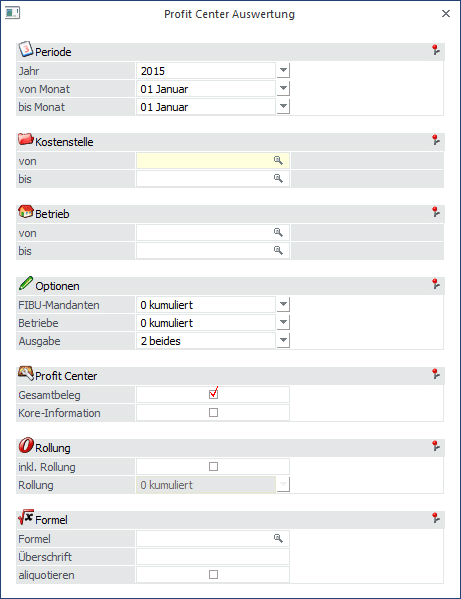

Die Profit Center Auswertung zeigt die anteilsmäßige Zuordnung eines AN zu einem Profit Center (Kostenstelle) und deren Kosten. Die Zuordnung kann prozentmäßig oder abhängig von der geleisteten Arbeitszeit sein. Gleichzeitig ist die Profitcenterauswertung die Basis für die Übergabe der Daten in die Kostenrechnung.
Die Zuordnung der Aufteilung in Profit Center wird beim AN hinterlegt, wobei die Zuordnung auf zwei verschiedene Arten erfolgen kann:
ü Aufteilung nach
Verhältniszahlen:
Es wird ein fixes Verhältnis definiert, nach dem der AN
aufgeteilt wird. Dieses System wird dann angewendet, wenn eine genaue Zuordnung
zu Kostenstellen erfolgen kann.
ü Aufteilung nach
Arbeitsleistung:
Bei diesem System erfolgt die Aufteilung im Zuge der
Bruttolohnerfassung - pro Kostenstelle wird angegeben, wie viel Zeit für die
Kostenstelle gearbeitet wurde. Aufgrund der Erfassung erfolgt dann die
Aufteilung auf die Kostenstellen (bezogen auf die anteiligen Bruttowerte).
Die Auswertung der Profit Center erfolgt im Menüpunkt
1 Auswertung
1 Profit Center Auswertung

Eingabefelder:
Ø Jahr
Durch Drücken der Tastenkombination ALT+Pfeil-nach-Unten wird die Auswahllistbox geöffnet, in der alle Jahreszahlen angezeigt werden, für die Abrechnungen vorhanden sind.
Ø Von Monat
Aus der Auswahllistbox kann das "von" Monat gewählt werden, ab dem die Auswertung durchgeführt werden soll.
Ø Bis Monat
Aus der Auswahllistbox kann das "bis" Monat gewählt werden, bis zu dem die Auswertung durchgeführt werden soll.
Hinweis:
Weichen das "von" und das "bis" Monat voneinander ab, kann die Auswertung nicht mit der Option "inkl. Rollung" ausgewertet werden.
Ø Kostenstelle von - bis
Hier kann ausgewählt werden, für welche Kostenstelle (Profit Center) die Auswertung durchgeführt werden soll. Durch Drücken der F9-Taste kann nach allen bereits angelegten Kostenstellen gesucht werden. Wird in den Feldern eine Kostenstelle angezeigt, dann wird neben dem Feld der Name der Kostenstalle angezeigt, wobei der Name unterstrichen dargestellt wird. Durch einen Klick auf den Namen der Kostenstelle wird der Kostenstellenstamm aufgerufen (sofern die notwendigen Berechtigungen vorhanden sind).
Ø Betrieb von - bis
Hier kann die Betriebsnummer eingegeben werden, die ausgewertet werden soll.
Ø FIBU-Mandanten
Es gibt die Möglichkeit, pro Betriebsstamm zu hinterlegen, in welchen FIBU-Mandanten die für den Betrieb erzeugten Buchungen und KORE-Zeilen geschrieben werden sollen. Hier kann nun entschieden werden, wie die Auswertung nach FIBU-Mandanten erfolgen soll:
ü Kumuliert
Ist diese Option
eingestellt, dann wird die Auswertung für alle Mandanten zusammengefasst.
ü Einzeln
Bei dieser Option
erfolgt die Auswertung pro FIBU-Mandant einzeln.
Ø Betriebe
Hier kann gesteuert werden, wie die Aufteilung der Betriebe bei der Profit-Center-Auswertung berücksichtigt werden soll.
ü Kumuliert
Ist diese Option
eingestellt, dann werden alle Betriebe zusammengefasst und entsprechend
ausgewertet.
ü Einzeln
Bei dieser Option wird
jeder Betrieb einzeln ausgewertet - d.h. aber auch, dass dann pro Betrieb alle
Kostenstellen extra ausgewertet werden.
Ø Ausgabe von
Aus der Auswahllistbox kann gewählt werden, welche Datenbereiche ausgegeben werden sollen.
ü 0 - Profit Center
Wird diese
Option gewählt, dann wird für jede Kostenstelle (Profit Center), die in der
Abrechnung angesprochen wurde, ein FIBU-Beleg erstellt, auf dem die angefallenen
Kosten ausgewiesen werden. Dabei werden nur die in der Kostenstelle angefallenen
Daten berücksichtigt. Zusätzlich erfolgt die Auswertung pro FIBU-Mandant, der in
den Betriebsdaten hinterlegt ist.
ü 1 - Auswerte Protokoll
Wird
diese Option aktiviert, dann wird ein Protokoll gedruckt, auf dem pro AN die
Aufteilung auf die diversen Kostenstellen aufgelistet wird. Dazu sind dann auch
die Lohnnebenkosten ersichtlich.
ü 2 - beides
Bei dieser Option
wird sowohl die Profit-Center-Auswertung als auch das Auswerteprotokoll
gedruckt.
Wenn die Option 0- Profit Center oder 2 - beides gewählt wurde, können noch zusätzliche Einstellungen vorgenommen werden:
Ø Gesamtbeleg
Wird diese Checkbox aktiviert, dann wird auch ein Gesamt-FIBU-Beleg erstellt, der alle Profit-Center beinhaltet.
Ø Kore-Information
Wird diese Checkbox aktiviert, dann wird eine zusätzliche Auswertung erstellt, die die ermittelten Kostenrechnungsdaten beinhaltet.
Ø inkl. Rollung
Ist diese Checkbox aktiviert, werden auch durchgeführte Rollungen mit berücksichtigt. Dabei kann mit den Optionen "kumuliert" und "einzeln" entschieden werden, ob die Rollungen in die laufende Abrechnung mit eingerechnet werden soll, oder ob die Rollungen einzeln (und pro Monat) ausgegeben werden sollen.
Auswerte Protokoll - Formel
In diesem Teil können zusätzliche Berechnungen für die Profit Center Auswertungen gesteuert werden. Ein Beispiel für die Anwendung wäre die aliquote Berechnung der Sonderzahlungen für die Kostenrechnung (ansonsten kommt es in den Monaten Juni und November zu Verzerrungen in der Kostenrechnung).
Ø Formel
Hier kann eine Formel eingegeben werden, die bei der Ausgabe des Auswerteprotokolls pro Zeile gerechnet wird. Durch Drücken der F9-Taste kann nach allen bereits vorhandenen Formeln gesucht werden. Durch Anklicken des FORMEL-Buttons kann die eingetragene Formel editiert werden.
Hier werden die gleichen Formeln verwendet, wie auch bei den Lohnarten. D.h., das Ergebnis der Berechnung muss am Ende in die Variable "Betrag" gestellt werden.
Ø Überschrift
Hier kann die Überschrift eingegeben werden, die für den berechneten Wert angedruckt werden soll.
Ø Aliquotieren
Ist diese Checkbox aktiviert, dann wird der errechnete Betrag gemäß des Verteilungsschlüssels auf die einzelnen Positionen aufgeteilt. Bleibt die Checkbox inaktiv, wird für jede Zeile der durch die Formel errechnete Betrag ausgewiesen.
Durch Drücker der F5-Taste wird die Ausgabe bzw. die KORE-Übergabe gemäß den Einstellungen gestartet. Die zuletzt vorgenommen Einstellungen werden auch gespeichert und beim nächsten Aufruf des Menüpunktes wieder vorgeschlagen. Durch Drücken der ESC-Taste wird das Fenster geschlossen.
Besondere Hinweise zur Auswertung:
Geringfügig Beschäftigte AN werden - sofern sie in der Profit-Center-Auswertung mitwirken - in jedem Monat berücksichtigt und die Prüfung auf die Geringfügigkeitsgrenze erfolgt - unabhängig der Einstellung im Betriebsdatenstamm - über alle Krankenkassen. In der Gesamtsumme der SV werden sie aber nur dann berücksichtigt, wenn die Geringfügigen auch monatlich abgerechnet werden. Damit ist gewährleistet, dass (sofern alle AN im Profit Center berücksichtigt werden) der Wert SV-Gesamt im Profit Center mit dem Gesamt-FIBU-Beleg übereinstimmt.